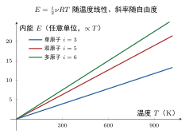

理想气体的内能
一句话定义
理想气体的内能是系统内全部分子无规热运动动能（平动、转动、振动）之和；对理想气体它仅是温度的函数，。
定性
先把”内能”和”温度""热量”区分清楚。
我们已经知道，温度度量的是”每个分子的平均动能”，是一个人均值。但现在要问的是总账：这罐气体里全部分子加在一起，到底有多少能量？这就是内能。温度是”平均每个分子多少钱”，内能是”整个集体总共多少钱”——两者维度不同，不能划等号。
更关键的区分是内能与热量的区别。内能是气体此刻正在拥有的能量，是”口袋里的钱”，由状态（温度、体积）唯一决定，叫状态量；热量是气体与外界交换的能量，是”转进转出的钱”，依赖具体的加热过程，叫过程量。一个是”有”，一个是”流动”。
那理想气体的内动能具体含什么？还记得理想气体假设——分子间无相互作用，所以分子间没有势能。于是理想气体的内能 = 全部分子的动能之和：每个分子 （按自由度均分），乘上分子总数，就是内能。它只随温度变，与体积无关——这是理想气体内能最有力的一个特点。
反直觉的点：同等温度下，单原子和双原子气体的内能不一样。一罐氦气（单原子，）和一罐同温同摩尔数的氧气（双原子，），氦的每个分子只有平动，氧的分子还会转动，所以氧的”人均能量”更高、总内能更大。可见内能不仅要看温度，还要看分子会几种运动。
顺着这个反直觉再想一步，就明白内能为何常被拿来”区分气体”：同样一摩尔、同样温度，单原子、双原子、多原子气体的内能依次递增，像给气体”按会几种动”分了三档。这使内能成了判断”这是什么气体、它有多能承热”的天然标尺——只靠温度一个数还不足以下判断，还得数一数它的自由度。

图：理想气体内能 随温度线性增长，不同自由度 的斜率不同——单原子（）斜率最小，双原子（）、多原子（）渐大。
数学表达
理想气体的内能定义为系统内全部分子热运动动能之和：
各符号： 是分子自由度总数， 是物质的量（），， 是热力学温度（）， 是气体质量， 是摩尔质量，故 。
几种常见情形：
内能变化量只随温度差：
读这个结构： 把”每个分子平均多少（）“乘上”分子总数（）“得到—— 正是 （因为 ）。它只含温度 与分子数、自由度，不含 、——这正是”理想气体不做功时，内能只由温度决定”这一特点的数学体现。
关键性质
-
内能只由温度决定，与体积、压强无关。 里根本没有 、。为什么：理想气体分子间无相互作用、势能为零，体积只改变分子间距而不改动能，故改变体积（等温）不改变内能。这使理想气体内能成为温度的单值函数。
-
内能是状态量（态函数），只由状态决定。 对给定的温度、物质的量、自由度，内能唯一确定，与系统”怎么走到这个状态”无关。为什么：内能是系统自身拥有的能量，是状态的属性；这才保证后面热力学第一定律 只由初末状态差决定，而与过程无关。
-
内能 = 平动动能 + 转动动能 + 振动动能之和（对理想气体）。 没有分子间势能项，内能全是动能。为什么：理想气体假设分子间无作用力，故无势能，内能完全来自分子热运动的动能；正是这一简化让内能表达式如此简单。
-
内能随自由度 增大而增大。 同样温度与摩尔数， 越大 越大。为什么：自由度过”岗位”， 大则每个分子分能量多，总内能高。故多原子气体同温内能 > 双原子 > 单原子。
-
绝对零度内能不为零（零点能）。 时 ，但量子效应使分子仍有最低的零点振动能。为什么：这是量子力学结论，经典公式在极低温只在”平动趋零”意义上近似正确，实际存在不可消除的零点内能。
推导
现在把 真正推出来——不是直接写结果，而是从”单个分子的均分能量”一步步累积到”全体总账”。
先抛问题：上一条给的是”一个分子平均多少能量”（），现在要的是”整罐气体总共多少”（）。这个从”人均”到”总账”的换算，是怎么精确完成的？
设物理场景。取 理想气体，分子总数为 ，平衡态温度 ，每个分子自由度数为 。分子间无相互作用，故内能就是全部分子动能之和。
列依据。三条：一是能量均分原理——平衡态每个自由度的平均能量为 ，故一个分子平均能量 ；二是分子数 ；三是帕萨常数关系 。
逐步演绎。第一步，求一个分子的平均能量。自由度 个，每个均分 ：
第二步，乘上分子总数得总能量。因为理想气体无势能，内能 就是所有分子动能之和。注意”平均”乘”总数”即为”总和”（这才是”平均”的意义）：
第三步，用 化简洁形式。代入 ：
第四步，改写为质量形式（工程常用）。因为 ，故
回头看。结论清晰：内能 = 每分子平均能量 × 分子总数，这是”总账 = 人均 × 人口”的最直接换算。之所以能这样简单相乘，正因理想气体无分子间势能，内能纯粹是动能之和；若有相互作用（真实气体），分子间势能无法写成”人均×人数”的简单形式，内能还要依赖体积——这也反过来说明 是理想气体特有的简化。推导全程只用均分原理 + 分子计数，没有多余假设。
为什么重要
内能是热力学的核心状态量之一，它的地位体现在：
- 支撑热力学第一定律：（吸收的热 = 内能增量 + 对外做功）。其中 是”内能变了多少”。没有它，第一定律里”吸热到底变成啥”就无法定量。
- 定义热容与比热：摩尔定容热容 ，定压热容 （迈耶关系）——整个热容体系都从内能对温度的依赖推出。
- 区分状态量与过程量：内能是状态函数， 对任何过程都是全微分，这是能量能写成 （只与初末有关）的根本原因；也才让焓、自由能等其它热力学势可定义。
工程动机硬核：发动机里气体吸热做功、制冷机里工质放热降温，全过程都在算”内能变多少、热量吸放多少”。掌握了 ，才算握住热能与机械能转换的账本。
还有一个常被忽略、却极实用的意义：正因为理想气体内能只随温度变，才能用它去”划分”不同过程的热量分配。定容加热时吸热量全部升内能（不做功）；等温膨胀时内能不变、吸热全变成对外做功；绝热过程内能全靠做功来增减。这三个过程的差异，细细品味都源于”内能只随 变、与 无关”这一条。内能是热力学各个等值过程之间那把”隐形的账尺”，用它一量，每个过程”热量去哪儿了”便一目了然。这也让后来焓、熵、自由能等热力学函数有了共同的出发点。
适用条件
内能公式的前提同样有”经典窗口”：
- 理想气体：分子间无相互作用、无势能，内能才只随温度变。真实气体有分子间势能，内能还依赖体积，需用更复杂的状态方程。
- 平衡态：温度有单一确定值，单一 成立；非平衡态各处温度不同，内能是场的函数。
- 经典近似 / 温度窗口：温度不太低（量子自由度不被冻结）、不太高（分子不显著解离电离）。
边界要说清：真实气体、低温量子冻结、高温解离都会使 失效。真实边界：液氦温区转动冻结使 下降；上千开尔文分子解离， 与内能都变；临界态附近。这些都要用真实气体模型或量子统计修正。
边界与误区
-
误区一：内能 = 热量。 根因：都叫”能”，日常混用。正确区别：内能是状态量（系统此刻拥有的能量，），热量是过程量（吸放的、随路径变的能量 ）。同一状态内能不变、但经过不同过程吸放的热量可不同。
-
误区二：以为理想气体内能随体积变化。 根因：真实气体分子间有势能、压缩会改变势能，直觉带到理想气体。正确区别：理想气体无分子间势能，等温改变体积不改变内能——内能只随温度变。做等温膨胀时，吸的热全变成对外做功，内能不变（这正是理想气体等温过程 的由来）。
-
误区三：把内能算进宏观动能或整体势能。 根因：把”能量”理解得太宽。正确区别：内能只算分子无规热运动的动能（理想气体），不含整罐气体整体平移的动能、不含它因离地面高而有的重力势能。内能是微观热运动的账，不是宏观机械能的账。
-
误区四：单原子、双原子都套 。 根因：只记住温度公式的 。正确区别：， 要看分子——单原子 、双原子 、多原子 ，内能随之不同。用 去套双原子会低估内能、算错热容与功。
对照
最容易和内能混的是热量。两者只用一个关键差异区分：
内能是”状态量”（取决于状态），热量是”过程量”（取决于路径）。
内能 由温度、摩尔数、自由度唯一确定，与过程无关，是系统的属性；热量 是系统与外界交换的能量，同一个初末状态，经过等温、等压、绝热不同过程，吸放热量不同。一句话记忆：内能是”口袋里的钱”，热量是”转进转出的钱”——口袋里有多少和转进转出多少是两码事。
例子
我们把内能公式用起来，算一笔加热账。
设有 双原子理想气体（如 ，刚性 ），定容下从 加热到 ，。内能增量：
因为定容（ 不变），气体不做功（），由第一定律 ——吸的热全部转成内能。
若换成 单原子氦（），同样 ，则
同样升温 10 K，双原子氧气需要更多能量——因为它内能中多了转动自由度。
反推工程含义：内燃机压缩空气时，空气升温，内能增加；若空气里水分（ 更多）、或换成氦增压却不点火，所需压缩功不同。工程师选工质、设计燃烧室温度时，都要用 估内能变化——内能决定了一缸气体要多少热量才升到工作温度，也就决定了热机效率的底线。
再看一个定性呼应：若把上面”定容加热”换成”等压加热”，情况就不同。等压时气体还要膨胀对外做功（），所以吸收的热量 ，比定容吸热多出 的”外做功份额”。但无论哪条路，内能增量仍是 ，与过程无关——这正是内能作为状态量最有力的表现：途径可以不同，内能的”账”只认初末状态。